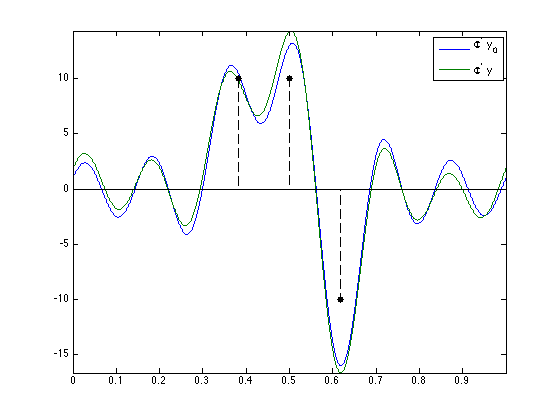
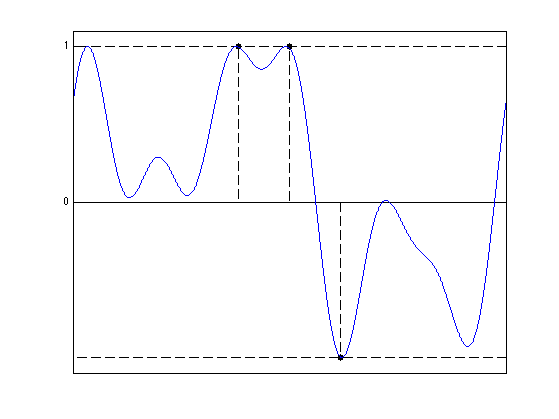
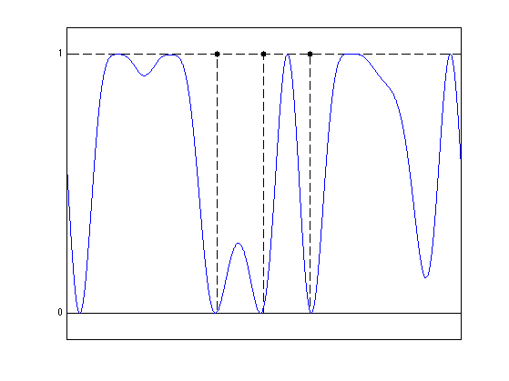
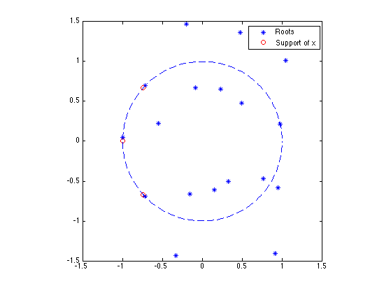
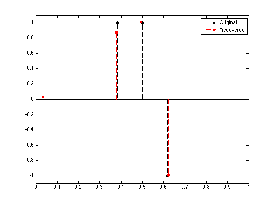
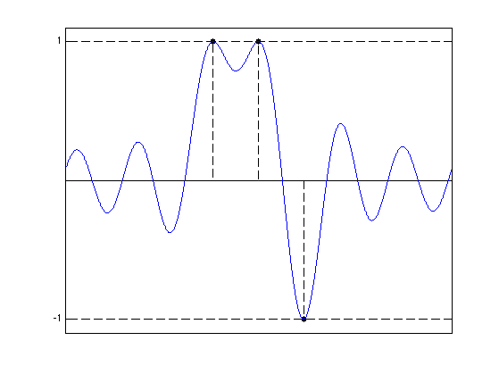
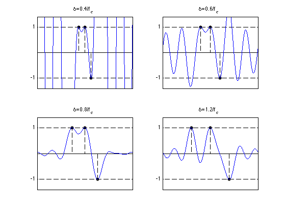

Sparse Spikes Deconvolution over the Space of Measures
This numerical tour explores the resolution of the sparse spikes deconvolution problem over the infinite dimensional Banach space of Radon measures. I would like to thank Jalal Fadili for his comments and corrections.
Contents
Installing toolboxes and setting up the path.
You need to download the following files: signal toolbox and general toolbox.
You need to unzip these toolboxes in your working directory, so that you have toolbox_signal and toolbox_general in your directory.
For Scilab user: you must replace the Matlab comment '%' by its Scilab counterpart '//'.
Recommandation: You should create a text file named for instance numericaltour.sce (in Scilab) or numericaltour.m (in Matlab) to write all the Scilab/Matlab command you want to execute. Then, simply run exec('numericaltour.sce'); (in Scilab) or numericaltour; (in Matlab) to run the commands.
Execute this line only if you are using Matlab.
getd = @(p)path(p,path); % scilab users must *not* execute this
Then you can add the toolboxes to the path.
getd('toolbox_signal/'); getd('toolbox_general/');
Sparse Spikes Deconvolution
We consider \(N=2f_c+1\) low-frequency noisy observations \(y = \Phi \mu_0 + w \in \CC^N\) of a input unknown Radon measure \(\mu_0 \in \Mm(\mathbb{T})\) where \(\mathbb{T}=\RR/\ZZ\) \[ \forall \om \in \{-f_c,\ldots,f_c\}, \quad (\Phi \mu_0)(\om) = \int_{\mathbb{T}} e^{-2\imath\pi \om t} d\mu_0(t). \]
We follow here a recent trend initiated by several papers (see for instance [deCastroGamboa12, CandesFernandezGranda13, BrediesPikkarainen13]) that performs the recovery of sparse measures (i.e. sum of Diracs) using a convex sparse regularization over the the space of Radon measures (which is in some sense the dual of the Banach space of continuous functions).
We consider, for \(\la>0\), the following regularization \[ \umin{\mu \in \Mm(\mathbb{T})} \frac{1}{2} \norm{y-\Phi \mu}^2 + \la \norm{\mu}_{\text{TV}}, \quad (\Pp_\la(y)) \] where \(\norm{\mu}_{\text{TV}}\) is the so-called total variation of the measure \(\mu\), which should not be confused with the total variation seminorm of a function. For an arbitrary measure, it reads \[ \norm{\mu}_{\text{TV}} = \inf\enscond{ \int_{\mathbb{T}} f d\mu }{ f \in C^0(\mathbb{T}), \normi{f} \leq 1 }. \] When there is no noise, it makes sense to consider the limit \(\la \rightarrow 0^+\) of \(\Pp_\la(y)\), which reads \[ \umin{\mu} \enscond{ \norm{\mu}_{\text{TV}} }{ y=\Phi \mu }. \]
We focus our attention on discrete measures, which are finite sum of Diracs, and that we write, for \(x \in \mathbb{T}^n\) and \(a \in \RR^n\) \[ \mu_{x,a} = \sum_{i=1}^n a_i \de_{x_i}. \] In this case, one has \[ \norm{\mu_{x,a}}_{\text{TV}} = \norm{a}_1 = \sum_{i=1}^n \abs{a_i}, \] which shows that \(\norm{\cdot}_{\text{TV}}\) is a natural generalization of the \(\ell^1\) norm to measures.
Several recent papers (such as [deCastroGamboa12, CandesFernandezGranda13, BrediesPikkarainen13, DuvalPeyre13]) have studied conditions under which \(\mu_0\) is the unique solution of \(\Pp_0(y)\) when \(\la=0\) and the robustness to noise when using \(\Pp_\la(y)\) with \(\la \sim \norm{w}\). We refer the interested reader to these papers and references therein.
The goal of this numerical tour is to detail how to numerically solve this problem using an approach proposed by [CandesFernandezGranda13] and also to get some intuition about the primal-dual relationships that underly several theoretical analyses of the performance of the recovery.
In the following, we denote, for \(p\in \CC^N\), the adjoint operator \[ \Phi^* p(t) = \sum_{\om=-f_c}^{f_c} p(\om) e^{2\imath \om t}, \] so that \(\Phi^* : \CC^N \rightarrow L^2(\mathbb{T}).\).
We denote \( \Phi_x(a) = \Phi(\mu_{a,x}) \) the action of \(\Phi\) on a discrete measure, i.e. \[ \Phi_x(a)(\om) = \sum_{k=1}^n a_k e^{-2\imath\pi x_k \om }. \]
We also denote \( \Phi'_x(a) = \Phi(\mu_{a,x})' \), which defines two linear operators \( \Phi_x, \Phi'_x : \RR^n \rightarrow \CC^N \), which are represented and stored as matrices in \( \RR^{N \times n} \).
Some display options.
ms = 20; lw = 1;
Sampling grid for the display of functions.
P = 2048*8; options.P = P; u = (0:P-1)'/P;
Set the cutoff pulsation \(f_c\) and number of measurements \(N=2f_c+1\).
fc = 6; N = 2*fc+1;
Fourier transform operator.
Fourier = @(fc,x)exp(-2i*pi*(-fc:fc)'*x(:)');
Operators \(\Phi\) and \(\Phi^*\). Note that we assume here implicitely that we use real measures.
Phi = @(fc,x,a)Fourier(fc,x)*a; PhiS = @(fc,u,p)real( Fourier(fc,u)'* p );
Set the spacing \(\de\) between the Diracs.
delta = .7/fc;
Position \(x_0\) and amplitude \(a_0\) of the input measure \(\mu_0=\mu_{x_0,a_0}\) to recover.
x0 = [.5-delta .5 .5+delta]'; a0 = [1 1 -1]'; n = length(x0);
Measurements \(y_0 = \Phi \mu_0 \) (noiseless).
y0 = Phi(fc,x0,a0);
Add some noise to obtain \(y = y_0 + w\). We make sure that the noise has hermitian symmetry to corresponds to the Fourier coefficients of a real measure.
sigma = .12 * norm(y0); w = fftshift( fft(randn(N,1)) ); w = w/norm(w) * sigma; y = y0 + w;
Display the observed data on the continuous grid \(\Phi^* y_0\).
f0 = PhiS(fc,u,y0); f = PhiS(fc,u,y); clf; hold on; plot(u, [f0 f]); stem(x0, 10*sign(a0), 'k.--', 'MarkerSize', ms, 'LineWidth', 1); axis tight; box on; legend('\Phi^* y_0', '\Phi^* y');
Dual Problem
The Fenchel-Rockafellar dual problem associated to \(\Pp_\la(y)\) reads \[ \umax{p \in \CC^N} \enscond{ \dotp{y}{p} - \frac{\la}{2} \norm{p}^2 }{ \normi{\Phi^*p} \leq 1 } \] which has a unique solution \(p_\la\), which is a projection on a closed convex set of \(y/\la\), since \[ p_\la = \uargmin{\normi{\Phi^*p} \leq 1} \norm{y/\la-p}^2. \quad (\Dd_\la(y)) \]
We denote \(\eta_\la = \Phi^* p_\la \in L^2(\mathbb{T})\), which is a trigonometric polynomial.
The Lagrangian dual problem associated to \(\Pp_0(y)\) reads \[ \umax{p \in \CC^N} \enscond{ \dotp{y}{p} }{ \normi{\Phi^*p} \leq 1 }. \] It does not have in general an unique solution. In [DuvalPeyre13], is it proved that \( p_\la \rightarrow p_0\) when \(\la \rightarrow 0\) where \(p_0\) is the solution of \(\Dd_\la(y)\) having a minimal \(\ell^2\) norm. We denote \(\eta_0=\Phi^* p_0\) the minimal norm dual certificate.
Strong duality holds between the primal problem \(\Pp_\lambda(y)\) and its dual \(\Dd_\lambda(y)\), and thus the values of these problems are equal. For any solution \(\mu_\la\) of \(\Pp_\la(y)\), one has \[ \eta_\la = \frac{1}{\la} \Phi^*( y-\Phi \mu_\la ). \]
Furthermore, the support of any solution \(\mu^\star = \mu_{x^\star,a^\star}\) of \( \Pp_\la(y) \) satisfies \[ \forall i, \quad \abs{\eta_\la(x_i^\star)}=1. \] This property is at the heart of the numerical scheme proposed by [CandesFernandezGranda13] to solve the primal problem.
In [DuvalPeyre13], it is shown that this certificate \(\eta_0\) is important, since it some how governs the stability of the recovered spikes locations (in particular how close they are to \(x_0\)) when the noise \(w\) is small.
Douglas-Rachford Algorithm
Note that this section is independent from the other one, and in particular this section has its own notations. The Douglas-Rachford (DR) algorithm is an iterative scheme to minimize functionals of the form \[ \umin{x} F(x) + G(x) \] over a Hibert space (assumed for ismplicity to be finite dimensional) endowed with a norm \(\norm{\cdot}\), where \(F\) and \(G\) are proper closed convex functions with intersecting domains. We assume that the set of minimizers is non-empty. We also assume that one is able to compute the proximal mappings \( \text{prox}_{\gamma F} \) and \( \text{prox}_{\gamma G} \) which are defined as \[ \text{prox}_{\gamma F}(x) = \uargmin{y} \frac{1}{2}\norm{x-y}^2 + \ga F(y) \] (the same definition applies also for \(G\)).
The important point is that \(F\) and \(G\) do not need to be smooth. One onely needs them to be "simple" in the sense that one can compute in closed form their respective proximal mappings.
This algorithm was introduced in [LionsMercier79]. as a generalization of an algorithm introduced by Douglas and Rachford in the case of quadratic minimization (which corresponds to the solution of a linear system).
To learn more about this algorithm, you can read [CombettesPesquet10].
A Douglas-Rachford (DR) iteration reads \[ \tilde x_{k+1} = \pa{1-\frac{\mu}{2}} \tilde x_k + \frac{\mu}{2} \text{rprox}_{\gamma G}( \text{rprox}_{\gamma F}(\tilde x_k) ) \qandq x_{k+1} = \text{prox}_{\gamma F}(\tilde x_{k+1},) \]
We have used the following shorthand notation: \[ \text{rprox}_{\gamma F}(x) = 2\text{prox}_{\gamma F}(x)-x \]
It is of course possible to inter-change the roles of \(F\) and \(G\), which defines another iterative scheme.
One can show that for any value of \(\gamma>0\), any \( 0 < \mu < 2 \), and any \(\tilde x_0\), \(x_k \rightarrow x^\star\) which is a minimizer of the minimization of \(F+G\).
Solving the Dual Problem with Douglas-Rachford
It is in general impossible to solve numerically \(\Pp_\la(y)\) because it is an infinite dimensional problem. In contrast, \(\Dd_\la(y)\) is a finite dimensional problem, so that there is some hope to be able to solve it with an algorithm.
Recall that the dual problem reads \[ \umin{p \in \CC^N} \norm{p - y/\lambda}^2 \quad\text{s.t.}\quad \normi{\Phi^* p} \leq 1. \]
As detailed in [CandesFernandezGranda13], the constraint \(\normi{\Phi^* p} \leq 1\) can be re-cast as imposing that the trigonometric polynomials \(1-\Phi^* p\) and \(1+\Phi^* p\) are sums of square polynomials. A classical result (see for instance [Dumitrescu07]) ensures that the convex set of sum of square polynomials (SOS) can be described as the intersection between the set of positive hermitian semi-definite (SDP) matrices \(\Ss^+\) of size \( (N+1)\times(N+1) \) and an affine constraint.
The problem is thus encoded using a SDP matrix \(X \in \CC^{(N+1)\times(N+1)}\). We define two linear mappings \(X \in \CC^{(N+1)\times(N+1)} \mapsto Q(X) \in \CC^{N\times N}\) and \(X \in \CC^{(N+1)\times(N+1)} \mapsto p(X) \in \CC^{N}\) extracting sub-matrices as follow \[ X = \begin{pmatrix} Q(X) & p(X) \\ p(X)^* & 1 \end{pmatrix}. \] The additional affine constraint is denoted as \[ {\Cc} = \enscond{ Q \in \CC^{N \times N} }{ \forall c \neq 0, \sum_{i} Q_{i,i+c} = 0, \text{trace}(Q)=1 }. \]
We thus re-write the initial dual problem as \[ \umin{X \in \CC^{(N+1) \times (N+1)}} F(X) + G(X) \] where \[ \choice{ F(X) = f(p(X)) + \iota_{\Cc}(Q(X)), \\ G(X) = \iota_{\Ss^+}(X), \\ f(p)=\frac{1}{2}\norm{y/\la-p}^2. } \]
Regularization parameter \(\la\).
lambda = 1;
Helper functions.
dotp = @(x,y)real(x'*y); Xmat = @(p,Q)[Q, p; p', 1]; Qmat = @(X)X(1:end-1,1:end-1); pVec = @(X)X(1:end-1,end);
Fonction \(f\) which is minimized in the original dual problem.
f = @(p)1/2*norm( y/lambda-p )^2;
Its proximal operator is \[ \text{prox}_{\ga f}(p) = \frac{p+\ga y/\la }{1+\ga}. \]
Proxf = @(p,gamma)( p + gamma*y/lambda )/(1+gamma);
The proximal operator of \(G = \iota_{\Ss^+}\) is the orthogonal projection on \(\Ss^+\). It is computed, for \(X=U\diag(\si_i)_i V^*\) any SVD of \(X\) as \[ \text{prox}_{\ga G}(X) = \text{Proj}_{\Ss^+}(X) = U\diag(\max(\si_i,0))_i V^*. \] For convenience, this is implemented in the function perform_sdp_projection.
ProxG = @(X,gamma)perform_sdp_projection(X);
The proximal operator of \(F\) is the concatenation of the proximal operator of \(f\) and the proximal operator of \(\iota_{\Cc}\) (which in turn is the orthogonal projector on \(\Cc\)). Note that \(\Cc\) is an affine set for which the projection is easy to compute as \[ \text{Proj}_{\Cc}(Q)_{i,j} = Q_{i,j} - \rho_{j-i} + \de_{i-j} \qwhereq \rho_{c} = \frac{1}{N-\abs{c}} \sum_{i} Q_{i,i+c} \] where \(\de_{c}\) is the Kronecker delta. For convenience, this is implemented in the function perform_sos_projection.
ProxF = @(X,gamma)Xmat( Proxf(pVec(X),gamma/2), perform_sos_projection(Qmat(X)) );
Define the reflexive prox operators shortcuts.
rProxF = @(x,tau)2*ProxF(x,tau)-x; rProxG = @(x,tau)2*ProxG(x,tau)-x;
Initial point of the DR iterations.
X = zeros(2*fc+2);
Parameters \(\ga>0\) and \(0 < \mu < 2\) of the DR algorithm.
gamma = 1/10; mu = 1;
DR iterations.
Y = X; ObjVal = []; ConstrSDP = []; ConstrSOS = []; niter = 300; for i=1:niter % record energies ObjVal(i) = f(pVec(X)); ConstrSDP(i) = min(real(eig(X))); ConstrSOS(i) = norm(perform_sos_projection(Qmat(X))-Qmat(X), 'fro'); % iterate Y = (1-mu/2)*Y + mu/2*rProxF( rProxG(Y,gamma),gamma ); X = ProxG(Y,gamma); end p = pVec(X);
Display \(\eta_\la = \Phi^* p \) where \(p=p_\la\) is the solution of \(\Dd_\la(y)\).
etaLambda = PhiS(fc,u,p); clf; hold on; stem(x0, sign(a0), 'k.--', 'MarkerSize', ms, 'LineWidth', lw); plot([0 1], [1 1], 'k--', 'LineWidth', lw); plot([0 1], -[1 1], 'k--', 'LineWidth', lw); plot(u, etaLambda, 'b', 'LineWidth', lw); axis([0 1 -1.1 1.1]); set(gca, 'XTick', [], 'YTick', [0 1]); box on;
Solving the Primal Problem with Root Finding
Following [CandesFernandezGranda13], one can hope to solve the primal problem by using the fact that the support of any solution is included in the saturation set of \(\eta_\la\) \[ S = \enscond{t}{ \abs{\eta_\la(t)}=1 }. \] A key remark is that this set can be computed by finding the roots of a triginometric polynomial on the unit circle
We assume that \(\Phi_{x^\star}\) is injective, where \(x^\star\) is a vector containing the points in \(S\). This is obtained in the case that \(\eta_\la\) is not a constant polynomial.
Display the magnitude of \(1-\abs{\eta_\la(t)}^2\), which is a trigonometric polynomial which is zero at the locations \(S\) of the Diracs of the primal problem.
clf; hold on; stem(x0, sign(abs(a0)), 'k.--', 'MarkerSize', ms, 'LineWidth', lw); plot([0 1], [1 1], 'k--', 'LineWidth', lw); plot(u, 1-abs(etaLambda).^2, 'b', 'LineWidth', lw); axis([0 1 -.1 1.1]); set(gca, 'XTick', [], 'YTick', [0 1]); box on;
Compute the coefficients \(c\) of the squared polynomial \(P(z) = 1-\abs{\eta(t)}^2 \geq 0\).
c = -conv(p,flipud(conj(p))); c(N)=1+c(N);
Comput the roots \(R\) of \(P\).
R = roots(flipud(c));
Display the localization of the roots of \(P(z)\). Note that roots come in pairs of roots having the same argument.
clf; plot(real(R),imag(R),'*'); hold on; plot(cos(2*pi*x0), sin(2*pi*x0),'ro'); plot( exp(1i*linspace(0,2*pi,200)), '--' ); hold off; legend('Roots','Support of x'); axis equal; axis([-1 1 -1 1]*1.5);
We isolate the roots \(R_0\) which are on the unit circle, those we are interested in.
tol = 1e-2; R0 = R(abs(1-abs(R)) < tol);
Note that roots located on the unit circle (those we are interested in) are actually double roots.
[~,I]=sort(angle(R0)); R0 = R0(I); R0 = R0(1:2:end);
compute argument to obtain the position \(x^\star\) of the Diracs locations of the solution to the primal problem.
x = angle(R0)/(2*pi); x = sort(mod(x,1));
The first order condition of the primal problem \(\Pp_\la(y)\) implies that the optimal coefficients \(a^\star\) satisfies \[ \Phi_{x^\star}^*( \Phi_{x^\star} a^\star - y ) + \la s^\star = 0, \] where \( s^\star = \text{sign}(a^\star) \) can be computed explicitely as \[ s^\star = \text{sign}(\Phi_x^* p) = \text{sign}(\eta_\la(x^\star)). \]
Phix = Fourier(fc,x); s = sign(real(Phix'*p));
One thus obtains, since \(\Phi_{x^\star}\) has full rank, \[ a^\star = \Phi_{x^\star}^+ y - \la (\Phi_{x^\star}^* \Phi_{x^\star})^{-1} s^\star. \]
a = real(Phix\y - lambda*pinv(Phix'*Phix)*s );
Display the retrieved Dirac locations.
clf; hold on; stem(x0, a0, 'k.--', 'MarkerSize', ms, 'LineWidth', 1); stem(x, a, 'r.--', 'MarkerSize', ms, 'LineWidth', 1); axis([0 1 -1.1 1.1]); box on; legend('Original', 'Recovered');
Exercice 1: (check the solution) You can see that the dual certificate \(\abs{\eta_\la}\) saturate to \(+1\) or \(-1\) in region that are far away from the initial support \(x_0\). This means either that the noise is too large for the method to successfully estimate robustly this support, or that \(\la\) was not chosen large enough. Explore different value of noise level \(\norm{w}\) and \(\la\) to determine empirically the signal/noise/\(\la\) regime where the support is sucessfully estimated.
exo1;
Certificates and Pre-Certificates
The minimal norm certificate \(\eta_0\) is important because it describes the evolution of \(\mu_\la\) of \(\Pp_\la(y)\) as a function of \(\la\) when \(\la\) is small enough. In particular, as shown in [DuvalPeyre13], if the saturation set \[ S_0 = \enscond{t \in \mathbb{T}}{ \abs{\eta_0(t)}=1 } \] is equal to \(x_0\) and if \(\eta_0''(t) \neq 0\) for \(t \in S_0\), then for small noise and small \(\la\), \(\mu_\la\) have the same number of Diracs as \(\mu_0\), and both Diracs' locations and amplitude are close to those of \(\mu_0\).
A major difficulty is that in general \(\eta_0\) is the solution of a convex progam, and is hence difficult to compute and to analyze.
It is however possible to compute a reasonnable guess by computing the minimal norm vector which interpolates the Diracs with vanishing derivatives. It corresponds to computing \(\eta_V = \Phi^* p_V\) where \[ p_V = \uargmin{p} \norm{p}^2 \quad\text{s.t.}\quad \Ga_x^* p = b_0 \] where we define \[ \Ga_x = [\Phi_x, \Phi_x'] \in \RR^{ N \times (2n) } \qandq b_0 = (\text{sign}(a_0),0 )^* \in \RR^{2n}. \]
It is easy to see that the solution of this problem can be computed in closed form by solving a linear system \[ p_V = (\Ga_x)^{+,*} b_0. \]
Compute the \(\Gamma_x\) matrix.
d = 1; % number of derivatives w = ones(N,1); Gamma = []; for i=0:d Gamma = [Gamma, diag(w) * Fourier(fc,x0)]; % derivate the filter w = w .* 2i*pi .* (-fc:fc)'; end
Compute \(\eta_V\).
pV = pinv(Gamma') * [sign(a0); zeros(n,1)]; etaV = PhiS(fc, u, pV);
Display the pre-certificate. In this case, it is a certificate and hence \(\eta_V = \eta_0\).
clf; hold on; stem(x0, sign(a0), 'k.--', 'MarkerSize', ms, 'LineWidth', lw); plot([0 1], [1 1], 'k--', 'LineWidth', lw); plot([0 1], -[1 1], 'k--', 'LineWidth', lw); plot(u, etaV, 'b', 'LineWidth', lw); axis([0 1 -1.1 1.1]); set(gca, 'XTick', [], 'YTick', [-1 1]); box on;
Exercice 2: (check the solution) Study the evolution of the pre-certificate as the separation between the spikes diminishes. When is it the case that \(\eta_0=\eta_V\)? When is it the case that \(\mu_0\) is the solution of \(\Pp_0(\Phi \mu_0)\) ?
exo2;
Bibliography
- [LionsMercier79] P. L. Lions and B. Mercier, Splitting Algorithms for the Sum of Two Nonlinear Operators, SIAM Journal on Numerical Analysis, Vol. 16, No. 6 (Dec., 1979), pp. 964-979.
- [CombettesPesquet10] P.L. Combettes and J-C. Pesquet, Proximal Splitting Methods in Signal Processing, in: Fixed-Point Algorithms for Inverse Problems in Science and Engineering, New York: Springer-Verlag, 2010.
- [DuvalPeyre13] V. Duval and G. Peyre, Exact Support Recovery for Sparse Spikes Deconvolution, preprint hal-00839635, 2013
- [deCastroGamboa12] Y. de Castro and F. Gamboa. Exact reconstruction using beurling minimal extrapolation. Journal of Mathematical Analysis and Applications, 395(1):336-354, 2012.
- [CandesFernandezGranda13] E. J. Candes and C. Fernandez-Granda. Towards a mathematical theory of super-resolution. Communications on Pure and Applied Mathematics. To appear., 2013.
- [BrediesPikkarainen13] K. Bredies and H.K. Pikkarainen. Inverse problems in spaces of measures. ESAIM: Control, Optimisation and Calculus of Variations, 19:190-218, 2013.
- [Dumitrescu07] B. Dumitrescu, Positive Trigonometric Polynomials and Signal Processing Applications, Springer, 2007.